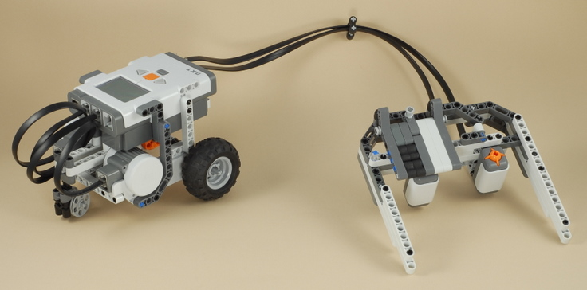

Fun Projects for your LEGO� MINDSTORMS� NXT!
|
|
Fun Projects for your LEGO� MINDSTORMS� NXT! |
| Car with Game Controller |
|

1-11
|
Start by building the Castor Bot. Click the picture for building instructions. The "Game Controller" built by the remaining steps in this project can also be used to control other robots that you design yourself. See the Challenges section at the end of the building instructions for details. |

|
|
12
| Note: The construction of the controller is not symmetrical. The left side is different from the right side. Look at the pictures in each step carefully. |
13
14
15
16
| Note: The white beams used in this step need to be white in order for the light sensor to work correctly. If you don't have any white beams of this size (because you are using the Education version of the NXT set), then you can tape a small piece of white paper over the bottom of these parts so that the light sensor will see white on the bottom of these beams (see How the Controller Works). |
18
19
| Turn the controller upside-down then insert the axle as shown below. |
|
For this part of the step:
The rubber pieces are used to push the thumb control back to the center position when you let go. If you think that this makes the thumb control too hard to push, you can remove them and keep the control centered manually with your thumb when necessary. |
20
Turn the controller upside-down to install the touch sensor as shown below.
21
|
Make sure that the light sensor is centered over the gray beam in the center of the thumb plate when the thumb control is centered, as shown below. |
22
|
Use the two longest wires to connect the light sensor to port 3 and the touch sensor to port 4 on the NXT. |

23
|
This wire clip will help keep the two wires organized and reduce tangling. |

| Car
with Game Controller Programming Use the program Game Control for the Car with Game Controller. This program could also be used along with the controller built in this project to control other robots that you create. See the Challenges section below for details. |
Using the Game Controller
| The light sensor on the game controller must be
calibrated before it will work right. At the beginning of the
program you are asked to steer the left thumb plate all the way to the
left, then all the way to the right, then put it in the center, pressing
the touch sensor button after each step. This allows the light sensor to
see what the different colors look like so that it knows what range of
light to expect. These steps are pictured below. Once you have completed the three calibration steps, you are ready to drive. Driving works as follows:
While driving, the NXT display will draw a center line and a moving circle to indicate the position of the thumb plate, and display the word "Pressed" whenever the touch sensor button is held down. |
The left thumb plate of the game controller works by
making the light sensor see different shades of gray when the plate
moves back and forth. The program reads the light sensor value and
uses that number to determine how much to pivot or steer, and in which
direction.
|
Challenges
|
|
Copyright
�
2007-2009 by Dave Parker. All rights reserved. |